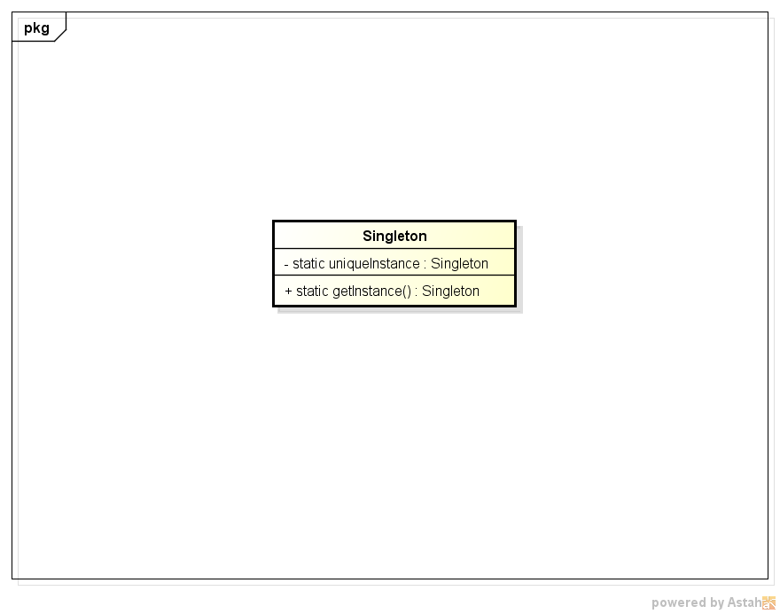

5 - Singleton
Descrição do padrão:
Singleton é um padrão de projeto que permite que apenas uma instância de um determinado objeto seja criada, é muito útil em situações nas quais não pode haver inconsistencia de dados.
UML do padrão:

Descrição do exemplo do livro:
No exemplo acima é criada uma classe singleton que representa a caldeira de uma fábrica de chocolate, nessa situação não pode haver erros sobre qual o estado atual da caldeira, pois se por exemplo a caldeira estiver cheia e for informado que ela está vazia chocolate será colocado nela e esse chocolate transbordará.